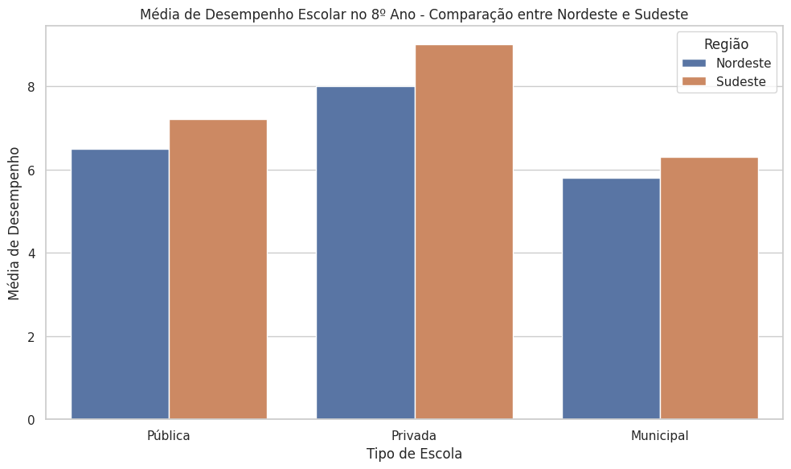
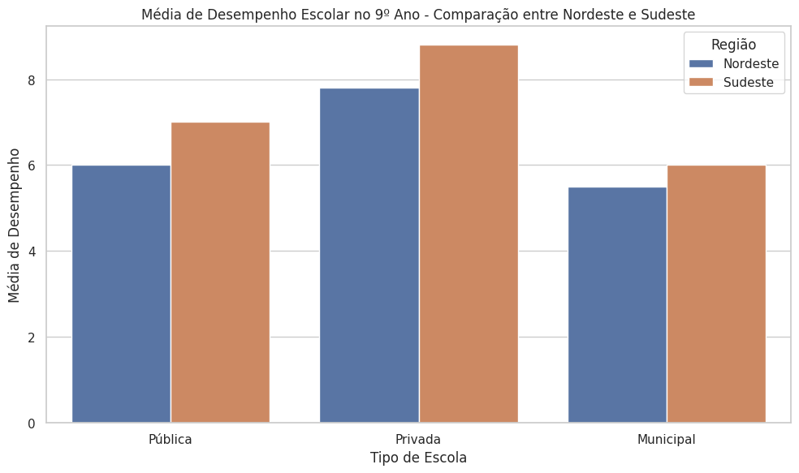
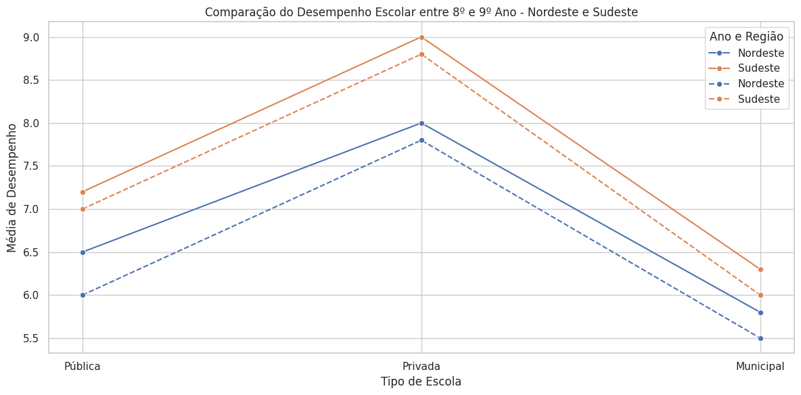
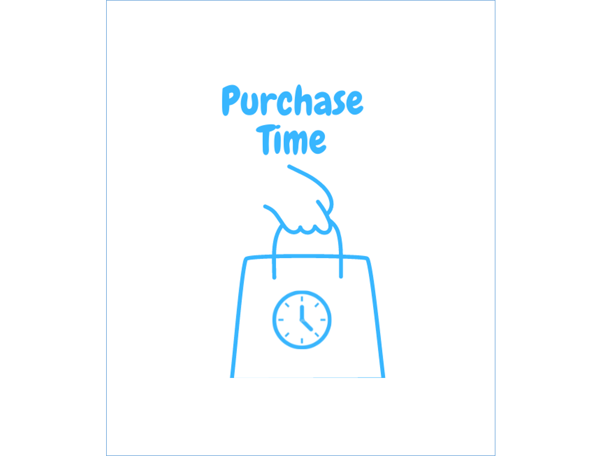
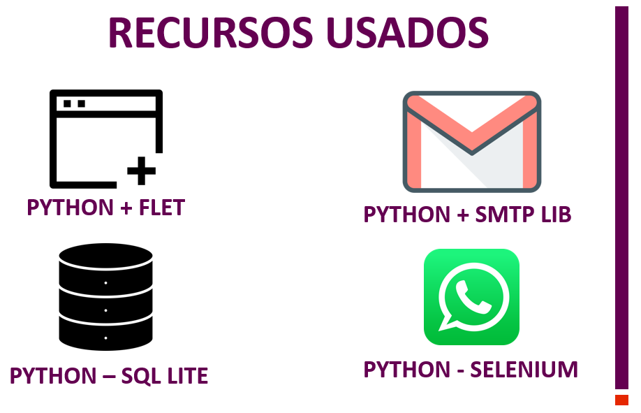
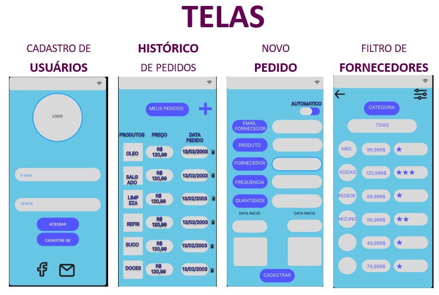

Sobre Mim
Eu chamo Matheus Lopes, tenho 21 anos e sou desenvolvedor Full Stack em busca da minha primeira oportunidade na área de desenvolvimento de software. Além de dominar tecnologias front-end e back-end, tenho um grande interesse pela área de análise de dados.
Atualmente, sou estudante de Análise e Desenvolvimento de Sistemas, cursando o terceiro semestre, e busco constantemente aprimorar minhas habilidades para contribuir com soluções tecnológicas eficientes e inovadoras. Estou sempre pronto para novos desafios e disposto a aprender para evoluir.
Projetos
Projeto em Análise de dados 💻 Big Data Python
Projeto Desenvolvido para ajuda na análise de dados entre escolas privadas, públicas e municipais. A análise dessas diferenças conseguimos compreender o desempenho escolar, entre as regiões Nordeste e Sudeste com base nas médias dos Alunos de cada escola no ano de 2023.
Metodologia
Coleta e análise de dados utilizamos uma abordagem comparativa com base em dados obtidos de fontes confiáveis, como INEP, Agência Gov e relatórios oficiais do Censo Escolar de 2023. E também consultamos dados fornecidos pelo André Motta, um profissional atuante no ambiente escolar, que trabalha diretamente com alunos do ensino fundamental. O gráfico das médias de desempenho escolar do 8º e 9º ano em escolas públicas, privadas e municipais nas regiões Nordeste e Sudeste foram feitas no Python utilizando as bibliotecas panda, matplotlib e seaborn para a visualização de gráficos no Google Collab.
A abordagem comparativa para comparar objetivamente as médias de desempenho dos alunos entre o Nordeste e Sudeste.
acesse e veja a análise e seu code: Veja o Projeto



Projeto: Aplicativo - PURCHASE TIME
Projeto para facilitar contato automático e direto entre lojistas e fornecedores. Além de auxiliar nas compras e fazer pedidos automáticos.
App ainda em ambiente de desenvolvimento
veja algumas sprints!



Contato
Se você quiser saber mais sobre meu trabalho ou discutir uma possível colaboração, sinta-se à vontade para entrar em contato.
Email: matheuslopec@gmail.com
Instagram: clique aqui
linkedin: clique aqui